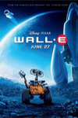
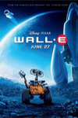

头脑特工队 Inside Out (2015)
导演： 彼特·道格特 / 罗纳尔多·德尔·卡门
评分：


剧 情 简 介 . . . . . .
可爱的小女孩莱莉出生在明尼苏达州一个平凡的家庭中，从小她在父母的呵护下长大，脑海中保存着无数美好甜蜜的回忆。当然这些记忆还与几个莱莉未曾谋面的伙伴息息相关，他们就是人类的五种主要情绪：乐乐、忧忧、怕怕、厌厌和怒怒。
 



导演： 彼特·道格特 / 罗纳尔多·德尔·卡门
评分：
剧 情 简 介 . . . . . .
可爱的小女孩莱莉出生在明尼苏达州一个平凡的家庭中，从小她在父母的呵护下长大，脑海中保存着无数美好甜蜜的回忆。当然这些记忆还与几个莱莉未曾谋面的伙伴息息相关，他们就是人类的五种主要情绪：乐乐、忧忧、怕怕、厌厌和怒怒。